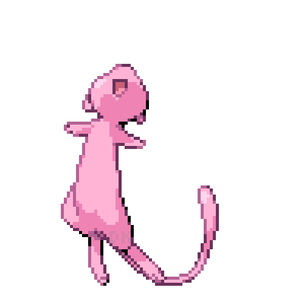
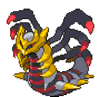
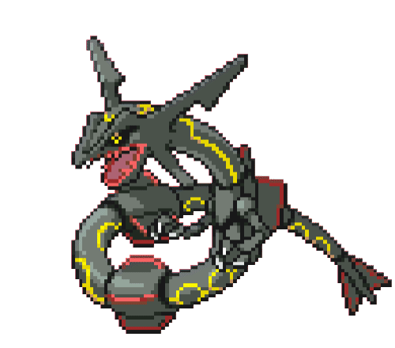

-
Squirtle #001

- Água
O casco de Squirtle não é apenas usado para a proteção. A forma arredondada do casco e as ranhuras em sua superfície ajudam a minimizar a resistência na água, permitindo que este Pokémon nade em altas velocidades.
-
Wartortle #002

- Água
Sua cauda é grande e coberta com uma pele rica, espessura. A cauda torna-se cada vez mais profunda em cor com a idade de Wartortle. Os arranhões na seu casco são provas de resistê ncia deste Pokémon como um combatente.
-
Blastoise #003

- Água
Blastoise tem canhões de água que se projetam de seu casco. Os canhões de água são muito precisos. Eles podem disparar balas de água com uma precisão suficiente para atacar latas vazias de uma distância de mais de 160 pés
-
Charmander #004

- Fogo
A chama que arde na ponta da cauda é uma indicação das suas emoções. A chama vacila quando Charmander está desfrutando de si mesmo. Se o Pokémon fica furioso, a chama queima ferozmente.
-
Charmeleon #005

- Fogo
Charmeleon impiedosamente destrói seus inimigos usando suas garras afiadas. Se ele encontrar um adversário forte, verifica-se agressivo. Neste estado animado, a chama na ponta da cauda se inflama com uma cor branca azulada.
-
Charizard #006

- Fogo
- Voador
Charizard voa em torno do céu em busca de adversários poderosos. Ele respira fogo de tão grande calor que derrete qualquer coisa. No entanto, nunca vira a sua respiração ardente em qualquer adversário mais fraco do que o próprio.
-
Bulbassauro #007

- Planta
- Venenoso
Bulbassauro pode ser visto cochilando sob luz solar intensa. Há uma semente na sua parte traseira. Por absorvendo os raios do sol, a semente cresce progressivamente maior
-
Ivysaur #008

- Planta
- Venenoso
Há um broto na parte de trás deste Pokémon. Para suportar o seu peso, pernas e tronco para Ivyssauro crescer grosso e forte. Se ele começa a passar mais tempo deitado ao sol, é um sinal de que o broto vai florescer em uma grande flor em breve.
-
Venusaur #008

- Planta
- Venenoso
Há uma grande flor na parte traseira do Venussauro. A flor é dita para ter em cores vivas se ele fica cheia de nutrição e luz solar. O aroma da flor acalma as emoções das pessoas.
-
Pikachu #009

- Eletrico
Toda vez que Pikachu dá de cara com algo novo, ele o acerta com uma descarga elétrica . Se você se deparar com um fruto torrado, é uma evidência de que esse Pokémon errou na intensidade de energia de sua descarga elétrica.
-
Gengar #010

- Fantasma
De vez em quando, em noites bem escuras, a sua sombra vai crescer, ficar disforme e te passar. Isso na verdade é Gengar passando por você, fingindo ser sua sombra.
-
Mew #011
- Psíquico
uma composição genética de todos os Pokémon. Ele é capaz de fazer-se invisível à vontade, po r isso mesmo evita que se aproxime das pessoas.
-
Giratina #013
- Fantasma
- Dragão
Diz-se que este Pokémon vive em um mundo ao contrário do nosso, onde o conhecimento comum é distorcido e estranho.
-
Rayquaza #012
- Dragão
Rayquaza é um Pokémon serpente grande com asas sobre seus ombros e para baixo do seu corpo, e nadadeiras similarmente estampadas na ponta de sua cauda. Ele tem simbolos amarelos cor de anel em todo o seu corpo, ele também tem chifres como estruturas em sua cabeça, com dois chifres menores abaixo.
-
Greninja #012

- Água
Cria estrelas arremessadas a partir de água comprimida. Quando as gira e as joga em alta velocidade, essas estrelas podem dividir o metal em dois.